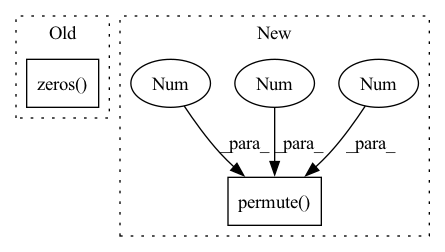

Pattern ID :162
Before Change
df_coefs, df_alpha = self.df_dec(feat_spec, emb)
spec = self.df_op(spec, df_coefs, df_alpha)
else:
df_alpha = torch.zeros( spec.shape[0], spec.shape[2], 1, device=spec.device)
return spec, m, lsnr, df_alpha
After Change
// spec = self.df_op(spec, df_coefs, df_alpha)
// ic(df_coefs.shape, spec.shape)
df_coefs, _, _ = self.df_stage(feat_spec)
df_coefs = df_coefs.unflatten(1, (self.df_order, 2)).permute(0 , 3 , 1, 4, 2 )
spec = self.df_op(spec, df_coefs, df_alpha)
return spec, m, lsnr, df_alpha
In pattern: SUPERPATTERN
Frequency: 3
Non-data size: 2
Instances Fragment ID: 1572766
Project Name: rikorose/deepfilternet
Commit Name: 945221141385ce808c03235a16a5e66477f50923
Time: 2022-04-12
Author: h.schroeter@pm.me
File Name: DeepFilterNet/df/deepfilternet2.py
M Class Name: DfNet
N Class Name: DfNet
M Method Name: forward(5)
N Method Name: forward(5)
M Parent Class: nn.Module
N Parent Class: nn.Module
M File Name: DeepFilterNet/df/deepfilternet2.py
N File Name: DeepFilterNet/df/deepfilternet2.py
M Start Line: 320
M End Line: 332
N Start Line: 338
N End Line: 344
Before Change
cardinality = self.base_leaf.cardinality
else:
cardinality = 1
tmp = torch.zeros(
context.num_samples,
self.in_features,
cardinality,
device=samples.device,
dtype=samples.dtype,
)
for sample_idx in range(context.num_samples):
// Get correct repetition
r = context.repetition_indices[sample_idx]
After Change
// tmp[sample_idx] = sample_i
// samples = tmp.view(context.num_samples, -1)
scopes = self.scopes[..., context.indices_repetition].permute(2 , 0 , 1 )
rnge_in = torch.arange(self.num_features_out, device=samples.device)
scopes = (scopes * rnge_in).sum(-1).long()
indices_in_gather = indices_out.gather(dim=1, index=scopes)
Fragment ID: 1572855
Project Name: braun-steven/simple-einet
Commit Name: e657fc668bd0f87f5e622a8b2549cd9e8ade437a
Time: 2022-01-11
Author: steven.lang.mz@gmail.com
File Name: simple_einet/factorized_leaf_layer.py
M Class Name: FactorizedLeaf
N Class Name: FactorizedLeaf
M Method Name: sample(3)
N Method Name: sample(3)
M Parent Class: AbstractLayer
N Parent Class: AbstractLayer
M File Name: simple_einet/factorized_leaf_layer.py
N File Name: simple_einet/factorized_leaf_layer.py
M Start Line: 63
M End Line: 120
N Start Line: 68
N End Line: 147
Before Change
seq_len = history.size()[1]
state_len = out_state.size()[1]
batch_size = history.size()[0]
attn_energies = torch.zeros(
batch_size, state_len, seq_len) .to(self.device)
for i in range(state_len):
for j in range(seq_len):
for k in range(batch_size):After Change
[tensor]: (batch_size, state_len, history_len)
if self.method == "dot":
history = history.permute(0 , 2 , 1 ) // batch_size * hidden_size * history_len
attn_energies = torch.bmm(out_state, history)
elif self.method == "general":
history = self.attn(history) Fragment ID: 1572773
Project Name: libcity/bigscity-libcity
Commit Name: ec61c9cd984d1c86ee715380ed3b65b4222c8d1f
Time: 2021-05-06
Author: 33283819+WenMellors@users.noreply.github.com
File Name: trafficdl/model/trajectory_loc_prediction/DeepMove.py
M Class Name: Attn
N Class Name: Attn
M Method Name: forward(3)
N Method Name: forward(3)
M Parent Class: nn.Module
N Parent Class: nn.Module
M File Name: trafficdl/model/trajectory_loc_prediction/DeepMove.py
N File Name: trafficdl/model/trajectory_loc_prediction/DeepMove.py
M Start Line: 33
M End Line: 43
N Start Line: 38
N End Line: 45